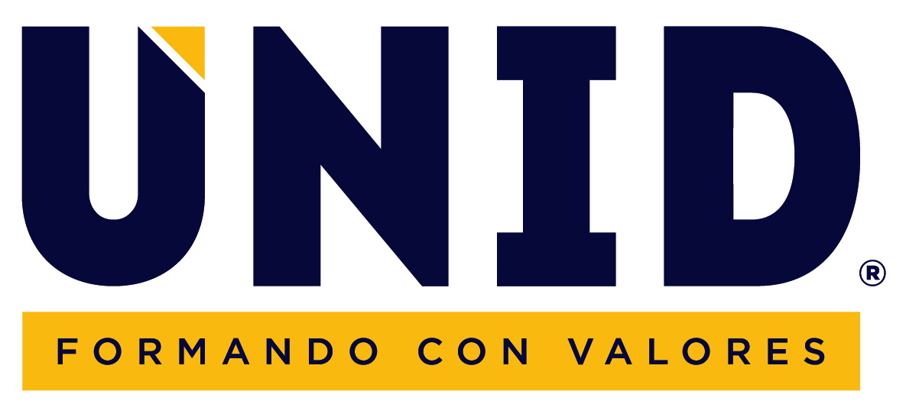

Universidad Interamericana Para El Desarrollo
busquedas Sugeridas
Sedes En México
Licenciaturas
Plan Academico


Licenciatura
Modelo de educación superior, inspirado en los llamados
«modelos no tradicionales» permite optimizar el tiempo y terminar una licenciatura
tres años. El modelo cuenta con una incorporacion reanan
campo de trabajo denominada Estadía Empresarial.
Ballicherato
Formación integral a los jóvenes de Educación Media Superior bajo un modelo educativo de vanguardia con una serie de principios y fines educativos.
Maestria
Nuestros programas de posgrado se caracterizan por ser profesionales. UNID es la universidad que te ofrece estudiar una maestría en cuatro cuatrimestres, con horarios flexibles para alternar estudios con tus labores profesionales.

Online
Este modelo educativo online te brinda la posibilidad de administrar y organizar tu tiempo de manera eficaz de acuerdo a tu ritmo de vida y aprendizaje. Por ello, contamos con horarios y programas de estudio flexibles para que estudies en el momento que sea y donde quieras